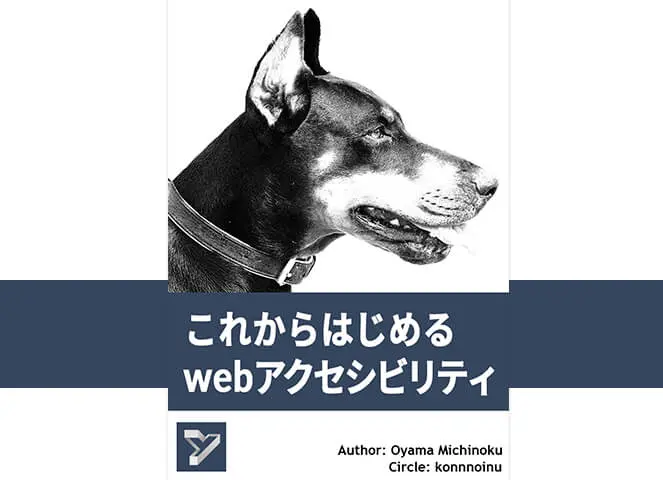

Vue.js から考えるアクセシビリティについて - 2019

こちらは、Webアクセシビリティ Advent Calendar 2019 の２１日目の記事です。
Vue.js 開発における Web アクセシビリティ対応にまつわる内容となっております。
この記事は公開から１年以上が経過しています。内容が一部古い箇所があります。
自己紹介

大山奥人（おおやまおくと）と申します。ネット上では、おおやまみちのく、yamanoku と名乗って活動しています。
制作会社の Web デザイナーとして働き出し、株式会社GEEK でマークアップ・フロントエンドエンジニアとして従事した後、2019 年 10 月から株式会社クラウドワークスに在籍しております。
役職は UX エンジニアです。個人ではアクセシビリティ啓蒙も行っています。
著書
これからはじめるwebアクセシビリティ

技術書典で「これからはじめるwebアクセシビリティ」という技術同人誌を発表しました。Web アクセシビリティをはじめる方向けの導入として知ってもらいたいのがきっかけでした。
現在 BOOTH や Note でも PDF ファイルにて販売しております。
また GitHub のフィードバック用のリポジトリの Issue にて修正や改善、提案を受け入れています。
yamanoku/accessibility_book-issues:「これからはじめるwebアクセシビリティ」へのFB専用リポジトリ
アクセシビリティとは何か
アクセシビリティの定義
まず Accessibility は「アクセスできる・アクセスしやすさ」と翻訳されます。Web アクセシビリティは Web にある情報やコンテンツに、あらゆる人がアクセスできようにすることを指します。
あらゆる人がアクセスできるようにするとはどういうことかというと、デバイス操作に慣れない人でも簡単に閲覧できるようにしたり、難しい言い回しを避けて理解しやすくしたり、コントラストを調整して閲覧しやすいデザインにしたり、音声読み上げをしてくれるスクリーンリーダーといった支援技術を使うために考慮するといったことです。
世界には10億人、言い換えると、人口の15から20%の割合で障害を持つ人がいます。国連は障害者の権利条約を定めており、人権としてWebを含んだ情報へのアクセスはほとんどの国で国連条約として批准されています。また数カ国では政策として義務付けられています。法律や規制にも関わらずアクセシビリティ標準を実行するのは、障害を持つ人たちにも、すべての人達にも不可欠なことです。
W3Cのアクセシビリティと標準技術 | Web Accessibility Initiative (WAI) | W3C
アクセシビリティ対応とは障害者対応なのか
よくある誤解なのですが、アクセシビリティ対応をすることは障害者対応だと捉えられていることがあります。
たしかにアクセシビリティ対応は障害者が使えるようにする目的もあるのですが、それ自体が目的なのではなく「あらゆる人が使えるようにする」ことが目的なので、障害者対応だけが先鋭化されて誤解につながっているように思います。
Google I/O では音声認識においてリアルタイムで字幕がつけられるライブキャプション機能がつけられました。聴覚障害の方はもちろん、ミュートにした状態でビデオを見たり、文章を書き起こして内容の理解につなげたりなど、あらゆる状況においてどんな人でも使えるようなものを生み出しています。

スクリーンリーダーも視覚障害者のためだけではなく、読字障害といった長文を読むのが困難な人を手助けしたり、文章の確認を目視だけで行うよりも読み上げてもらうことで間違いに気づきやすくなります。
皆が参加できるためのアクセシビリティ対応
アクセシビリティは使いやすさを重視する「ユーザビリティ」と混同されがちですが、使いやすいかどうか以前に使えるかどうかを考えることが目的です。そして、使えるということは、参加できるかどうかということにも繋がります。
海外では法律でアクセシビリティを確保する決まりを定めていますが、これはアクセシビリティを手段として考えているより、アクセシビリティ自体を人権として捉えている部分があるからです。
Vue.js と Web アクセシビリティ
アクセシビリティについて何かを知っていただいたとことで、本題でもある Vue.js とアクセシビリティにまつわる話をしていきたいと思います。
アクセシビリティのドキュメントがない
Vue.js が日本で爆発的な人気を誇った要因の1つとして公式ドキュメントが日本語訳されていたことがあると思っています。私自身、ドキュメントの日本語訳があることで非常に取り組みやすかったです。
ところでそんな Vue.js の公式ドキュメントでアクセシビリティについてどれだけ言及されているか皆さんはご存知でしょうか。
実はアクセシビリティに言及されたドキュメントはなく、一部のドキュメント内で軽く触れているだけなのです。
As we develop our
<blog-post>component, some features may require communicating back up to the parent. For example, we may decide to include an accessibility feature to enlarge the text of blog posts, while leaving the rest of the page its default size:Components Basics — Listening-to-Child-Components-Events — Vue.js
You can use this base icon as is- the only thing you might need to update is the viewBox depending on the viewBox of your icons. In the base, we’re making the width, height, iconColor, and name of the icon props so that it can be dynamically updated with props. The name will be used for both the
<title>content and its id for accessibility.
React と Angular は公式ドキュメントにアクセシビリティの項目があり、開発における留意点などをまとめています。
私は React や Angular と同様にアクセシビリティの項目を設けても良いと感じています。Vue.js の Issue を調べてみたところ Callum Macra 氏がドキュメントを作成を進めていたようなのですが、現在 Pull Request は止まっている状態です。
Accessibility docs · Issue #974 · vuejs/vuejs.org
まだ途中ではありますが、現在編集が進んでいるドキュメントでは Web アクセシビリティを理解するにとても良くまとまっている内容でした。英語のドキュメントですが、皆さんにも見ていただきたいです。
vuejs.org/accessibility.md at a11y-docs · callumacrae/vuejs.org
Vue a11y
公式ドキュメントでのアクセシビリティ項目の作成はまだですが、代わりに Vue.js のアクセシビリティコミュニティは作られています。

このコミュニティでは Vue.js のアクセシビリティプラグイン・ライブラリをいくつか作成しており、私も何かしら寄与できたらいいなと思っております。
Vue.js における実装の留意点
次に Web アクセシビリティを考慮する上で Vue.js の実装で留意しておくべきことについて紹介します。
何でも div で実装しない
Webアクセシビリティをつくるには、セマンティクスな実装を心がける、というのが基本です。これは div タグ（または span タグ）自体が悪いのではなく、そのコンポーネントの見た目以外で必要に応じたタグを使うべきということです。
すべてのユーザインタフェースコンポーネントに、役割、状態、及び値の情報を提供することで、例えば、スクリーンリーダー、画面拡大ソフトウェア、及び音声認識ソフトウェアなどの、障害のある利用者が使用する支援技術との互換性を保つことが可能になる。
たとえばボタンを実装するとき、div タグから実装するとしたらさまざまな考慮が必要となります。
<template>
<div role="button" tabindex="0" @click="handleClick" @keyup="handleKeyUp">button</div>
</template>
これがセマンティクスな実装をすれば button タグ１つで済みます。セマンティクスでないことは本来もつ機能を損なってしまいかねません。
<template>
<button type="button">button</button>
</template>
キーボードで操作できるようにする
スクリーンリーダーを利用する人はキーボードを使って情報にアクセスします。なのでキーボードであらゆる情報へアクセスできるかを意識する必要はあります。
また、スクリーンリーダーを使用しなくとも、パソコンの操作に慣れてきた人であれば、フォームの送信でエンターキーを押したり、ダイアログを閉じる際に ESC キーを押したり、マウス操作ではなくキーボード操作で行うことがあると思います。
キーボード操作の考慮にあわせて、フォーカスのためのアウトラインも意識する必要があります。アウトラインを除去することで現在位置を把握しづらくなってしまうためです。
vue-accessible-modal - CodeSandbox
SPA 開発
モダンなフロントエンド開発において、SPA での実装は増えてきています。SPA は１つの HTML と JavaScript を使用した動的なコンテンツとして扱うため、ページ内で何がどう変わったのかを判定できないことがあります。
ページの変更や状態の更新では aria-live 属性を使用した実装が必要となります。ただし属性値の扱いを理解する必要があるため、はじめは vue-announcer というライブラリを利用してみても良いかも知れません。router でのページ移動の読み上げや、コンポーネント内での状態変化の読み上げも簡単に設定できるようになります。
Nuxt.jsの設定
盲点な部分かもしれませんが、nuxt.config.js での htmlAttrs で言語設定は必要です。
module.exports = {
head: {
htmlAttrs: {
lang: 'ja'
}
}
}
何も設定されていない場合、言語指定は en、つまり英語になっています。このままだとアプリケーションやサイトの見た目が日本語だとしても、ブラウザの判定では「英語の」アプリケーションやサイトとなってしまいます。
未設定だとスクリーンリーダーによっては英語以外の部分を読み上げてくれない事態が起きます。（これは Android の Talkback 機能にて確認できました）。国際化対応をしていなくとも言語設定は気をつけなければなりません。
テスト・チェック
vue-axe
axe-core という deque systems という会社が開発しているアクセシビリティチェックをするライブラリがあります。これは Chrome の Lighthouse のアクセシビリティ項目チェックでも使用されているものです。

こちらは組み込むことでコンソール上でアクセシビリティチェックを通してくれます。以下は設定になります。
# NPM
$ npm install -D axe-core vue-axe
# Yarn
$ yarn add -D axe-core vue-axe
import Vue from 'vue'
if (process.env.NODE_ENV !== 'production') { // development environment
const VueAxe = require('vue-axe').default
const AXE_LOCALE_JA = require('axe-core/locales/ja.json') // locale setting
Vue.use(VueAxe, {
config: {
locale: AXE_LOCALE_JA
},
clearConsoleOnUpdate: false // Clears the console each time vue-axe runs
})
}
Storybook
自社のコンポーネントライブラリ、デザインシステムで利用されている方もいるかもしれません。こちらは単体ではチェックできませんが、アドオンに storybook-addon-a11y があり、これを使うことでコンポーネントやストーリーに対してアクセシビリティチェックを通すことが出来ます。

eslint-plugin-vuejs-accessibility
JavaScript の静的検証ツールとして使われる eslint にはプラグインでアクセシビリティチェックができるものもあります。CI/CD に組み込むことでビルド時にエラーを発見することも可能です。
チェック内容の例をあげると、img の alt 属性に値が入っているか、フォーム要素にはラベル（label）が付与されているか、絵文字をアクセシブルに実装できているか、などがあります。
<!-- Fail -->
<span>🐼</span>
<!-- Good -->
<span role="img" aria-label="Panda">🐼</span>
ただし Lint はあくまでコード規約をチェックするものなので、エラー判定のみに頼りきらないようにしましょう。
ユーザテスト
機械的なテストについて紹介しましたが、自動化によるチェックやテストではすべてのアクセシビリティの問題のうちたった 30% しか確認できないという研究結果が出ています。
そのため、ユーザテストを通したチェックも必要となります。ブラウザチェックやスクリーンリーダーテスト、キーボードテストといった実際に見てみる、触ってみるのを試した上で問題ないかをテストしていきます。
どういったテストをすべきかは、WCAG を参考にしましょう。これは W3C 勧告として公開された Web コンテンツをアクセシブルにするためのガイドラインで、どうすることでアクセシブルになるか、技術に依存しない検証方法も提示されています。
Web Content Accessibility Guidelines (WCAG) 2.1
しかし毎回 WCAG の仕様を参照しにいくことも大変なので、必要な要素を参考にした上で独自のガイドラインを作成できると良さそうです。
おわりに
1989 年 3 月 12 日、欧州原子核研究機構（CERN）のティム・バーナーズ＝リーは「Information Management: A Proposal」（情報管理：提案）を執筆し、さらに進んだ情報管理システムを描きました。これによって WWW（World Wide Web）が発明されました。

The power of the Web is in its universality. Access by everyone regardless of disability is an essential aspect.
Press Release: W3C Launches International Program Office for WAI
ティム・バーナーズ＝リーは「Webのパワーは、その普遍性にある。障害の有無に関係なく、誰もが使えることが、その本質である」と説きました。
Whatever the device you use for getting your information out, it should be the same information.
そして「情報を取得するためにどんなデバイスを使用していたとしても、取得できる情報は同じであるべきだ。」ともインタビューで答えていました。これこそまさに Web がアクセシビリティを実現するソリューションであることを示しています。
その証拠にこの記事を読んでいるあなたは、インターネットを使うことができれば、場所や時間を問わずにこの情報にアクセスすることができています。Web にまつわる業務をしているだけでもアクセシブルなことを実現できている、ということは認識しておいても良いかもしれません。
そしてあれから３０年経った現在、世界人口におけるインターネット利用者の数は 50% のハーフラインを超えました。
この数が大きくなることで、よりインターネットに触れられないことの格差というものも大きくなるように感じられます。Web というものを取り扱う人たちであればアクセシブルにしていくということは、より命題となってくることでしょう。
ウェブのための戦いは、我々の時代におけるもっとも重要な大義の一つである。今日、世界の半分がネットにつながっている。その残り半分がネットにつながらないまま取り残されることなく、皆が平等、機会、創造性を推進するウェブに貢献できるようにすることは、かつてないほど差し迫った課題なのだ。
（中略）
ウェブは皆のためにあり、我々が力を合わせれば、ウェブを変える力を持つ。それは簡単ではないだろう。けれども、大きな夢を見ずにたくさん働ければ、我々は自分たちが望むウェブを手にできるのだ。
Vue.js を通じて、Web を活かして、アクセシビリティに取り組もう
アクセシビリティなものを生み出すのに特定のフレームワークじゃないとできないということはありません。ですが Vue.js は親しみやすく門戸が広いフレームワークだと感じています。
アクセシブルにしていくことは「やっておしまい」「０か１か」という話でもなく、プロダクトを作りながら継続的に見直し試行錯誤していく部分もあるので、「いずれやる」ものとして捉えず、じっくりゆっくりと一つずつ進めていければと考えています。
“Start Small, Start Now（小さく初めていこう、でも、できることから今やりましょう）”と呼びかけていきたいし、自分自身も肝に銘じておきたい。
本記事を通じて、開発者やデザイナー、Vue.js に関わる人たちが少しでもアクセシビリティに興味をもち、これからアクセシビリティ対応をしてゆくためのエンパワーとなれることを願っています。
まだまだやることが多く、進めづらい分野ではありますが、少しずつでもこの輪が広がればいいなと思っています。アクセシビリティとはいかなる人も受け入れてくれるものなのだから。